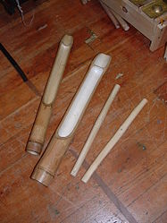

The Agung a Tamlang is a type of Philippine slit drum made of hollowed out bamboo in imitation of the real agung. Pitch is determined by the length and depth of the slit. The agung a tamlang is used as practice for the real agung.players either use either one agung a tamlang (hold it with one hand and using the other to strike it with a beater) or using two agung a tamlangs where the other agung is held with one’s feet.
